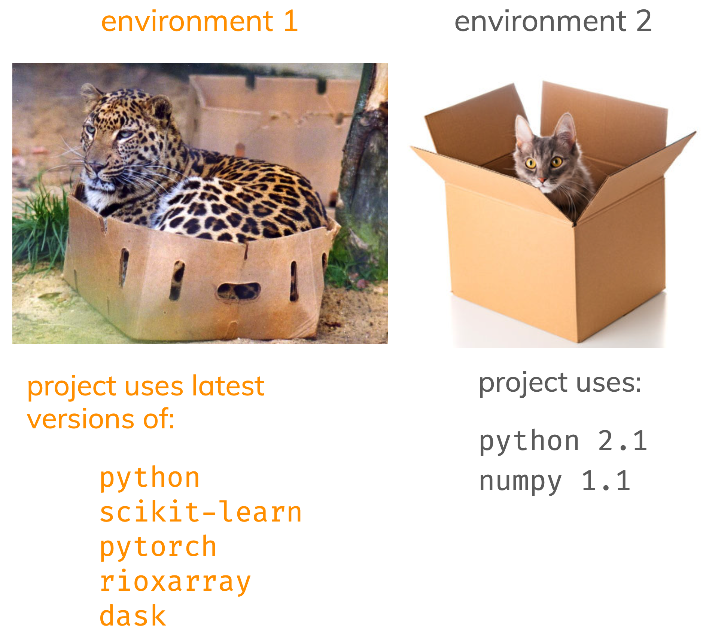

Virtual environments
This hands-on lesson gives a brief introduction to Python virtual environments.
Learning objectives
By the end of this lesson, students will be able to:
Environments: what and why
Environments are a way to keep the packages and Python versions you use for different projects organized.

The main reasons to create an environment for each of your projects are:
- To not interfere with your computer’s pre-installed Python
- Manage dependency conflicts for different projects
- Reproducibility! Being able to share your code and what it needs to run it with others
What these are.
Conda environments
Conda is an environment and package management system: it can both create and administer the environments and install compatible versions of software and their dependencies. Environments created with conda are usually called conda environments. A conda environment doesn’t need to be a Python environment, conda can manage packages for any programming language.
Conda channels
Conda channels are the remote locations where packages are stored. Think of them as shops for getting packages. By default, packages are downloaded to your computer and updated from the conda default channel. But there are others! Conda-forge and bioconda are two popular ones. We can choose which conda channel to install a package from.
pip
pip is a package management system only for Python. We can use it to install packages from the Python Package Index (PyPI). We can use pip inside a conda environment when a package is not available from a conda channel.

Conda commands
| Command | What it does |
|---|---|
conda env list |
list available conda environments |
conda create --name my-env python |
create new Python environment called my-env |
conda remove --name my-env --all |
deletes my-env |
coda activate my-env |
activate environment |
coda deactivate |
deactivates current environment and returns to base environment |
python -V |
check which Python version is installed in current environment |
conda list |
check which packages are installed in current environment |
conda list numpy |
check if numpy is installed in current environment |
1. List environments
To list all the conda environments available in your computer and their location we use:
conda env listThe output should look something like this:
# conda environments:
#
base * /Users/galaz-garcia/opt/anaconda3
eds220-env /Users/galaz-garcia/opt/anaconda3/envs/eds220-envInfo about env being a directory/files with that file path.
When you run conda env list, the asterisk next to the environment path indicates which environment is active. In this example, I am using the base Python environment. The currently active environment also appears in the terminal in parenthesis at the beginning of each line, something like this:
(base) my-computer:MEDS-eds-220-course galaz-garcia$2. Create new Python environment
To create a new environment called test-env and, within it, install the most recent version of python we simply run:
conda create --name test-env pythonWhen you run it it will give you information about the packages that will be installed and ask you whether to proceed or not. Type y and press enter to create the environment and install the packages.
Check whether the new test-env environment is listed by conda. Is it activated or not?
3. Activate environment
To activate the test-env environment we use the command
conda activate test-envVerify that test-env is now your current environment.
4. Environment information
To see which packages are installed within the currently active environment we run:
conda listThe output will be a long list that looks something like this:
# packages in environment at /Users/galaz-garcia/opt/anaconda3/envs/test-env:
#
# Name Version Build Channel
bzip2 1.0.8 h6c40b1e_6
pip 24.2 py312hecd8cb5_0
sqlite 3.45.3 h6c40b1e_0
...